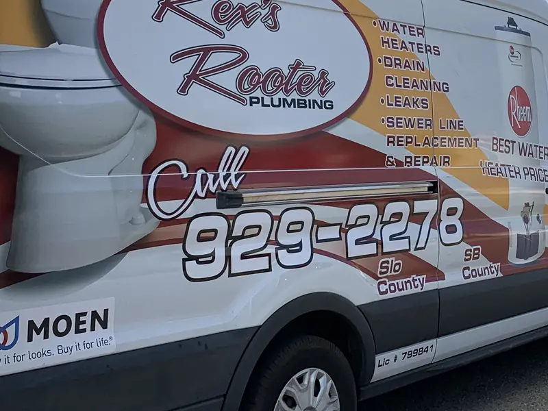

Emergency Plumbing, Available 24/7
Burst pipe? Overflowing toilet? No hot water? Our 24-hour emergency plumbers are ready to respond quickly anywhere in Paso Robles, Atascadero, Arroyo Grande or Nipomo.
- Burst and leaking pipes
- Overflowing toilets
- No hot water
- Sewer backups
